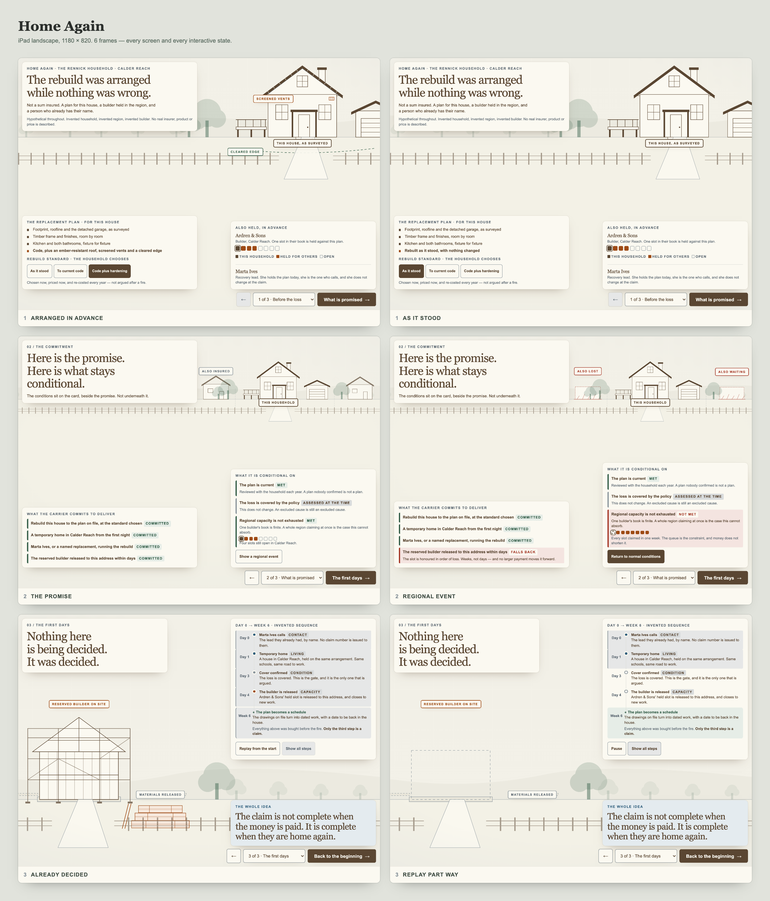
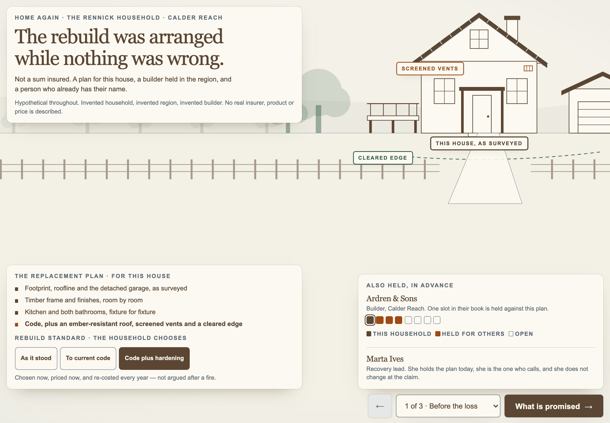
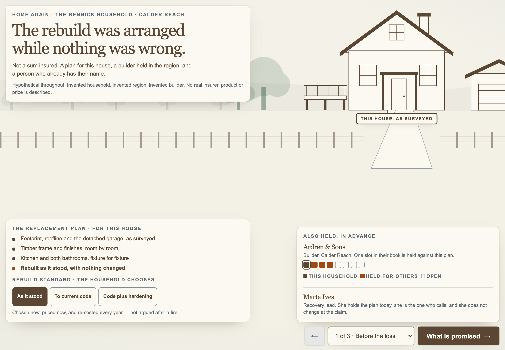
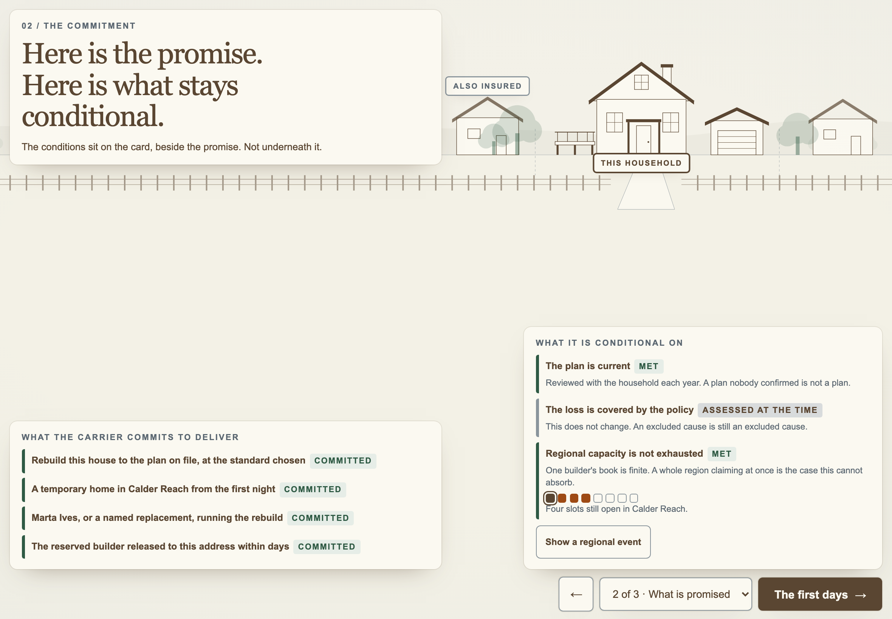
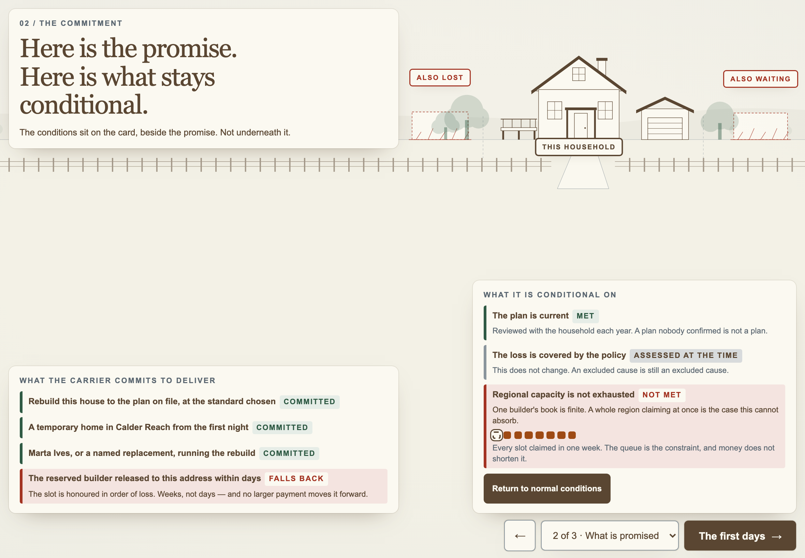
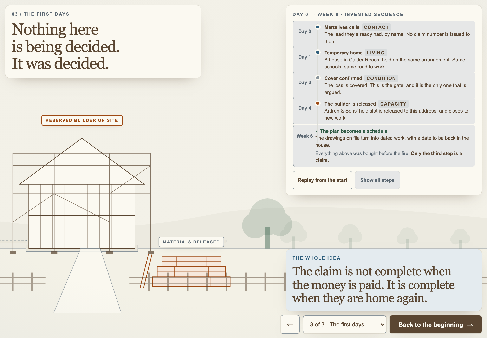
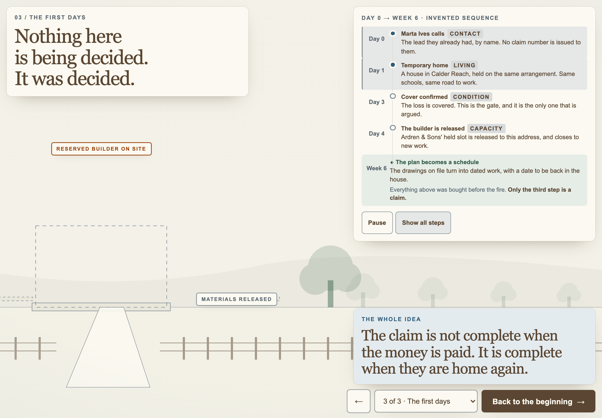

Prototype review · Friday workshop
Live · https://fieldnotes-khaki-three.vercel.app/prototype/home-again/
Commit · fc66e6c (fc66e6ca5219dc1c71d4f2a50e8d4cff81e1953b)
Captured from · the deployed build at that commit, not from local files
Edition ink · #5A4632
A rebuild arranged before the loss: what is committed in advance, what stays conditional, and why a bigger cheque cannot substitute for a builder.
1. Arranged in advance The replacement plan for this house was specified, and the builder and recovery lead were held, while nothing was wrong.
2. The promise Here is exactly what is committed, and — in a card of equal weight, not a footnote — exactly what stays conditional.
3. Already decided The first days after. Five beats, only one of which is a claim.
As it stood / To current code / Code plus hardening Rewrites the fourth plan line and redraws the house — hardening adds sheathing, screened vents and a cleared edge.
Show a regional event Fills every builder slot. One commitment degrades to "Falls back"; the other three are untouched. This is the argument that money does not shorten a queue.
Replay from the start / Show all steps Drives the timeline and the ground through slab → scaffold → frame.
Hypothetical
Every screen states, once and plainly, that its content is invented. No real insurer's premium, withdrawal, book or pricing decision is stated anywhere, and no invented figure is attached to a real company's name.
Tested against the deployed build before these screenshots were taken. The harness asserts computed font-size, contrast against the composited rendered background, touch-target size, clipping, overlap, horizontal overflow and console errors — a layout audit that does not assert on computed font-size is not a readability audit.
| Class | Size | Result |
|---|---|---|
| iPad landscape (primary) | 1180 × 820 | pass |
| iPad landscape, browser chrome | 1180 × 740 | pass |
| iPad portrait (primary) | 820 × 1180 | pass — scrolls, as permitted |
| Desktop | 1920 × 1080, 1440 × 900, 1280 × 720 | pass |
| Mobile | 430 × 932, 390 × 844, 360 × 740 | pass — scrolls |
ipad-landscape (6)
home-again-1-arranged-in-advance-ipad-landscape.pnghome-again-1-as-it-stood-ipad-landscape.pnghome-again-2-the-promise-ipad-landscape.pnghome-again-2-regional-event-ipad-landscape.pnghome-again-3-already-decided-ipad-landscape.pnghome-again-3-replay-part-way-ipad-landscape.pngipad-portrait (3)
home-again-1-arranged-in-advance-ipad-portrait.pnghome-again-2-the-promise-ipad-portrait.pnghome-again-3-already-decided-ipad-portrait.pngdesktop (3)
home-again-1-arranged-in-advance-desktop.pnghome-again-2-the-promise-desktop.pnghome-again-3-already-decided-desktop.pngmobile (3)
home-again-1-arranged-in-advance-mobile.pnghome-again-2-the-promise-mobile.pnghome-again-3-already-decided-mobile.pngContact sheet · home-again-contact-sheet-ipad.png
Scanned: page copy, HTML, CSS, JS, comments, metadata, page title, filenames, directory names, URL slug, accessibility labels, this document, the screenshot filenames above and the rendered pixels of every screenshot.
pattern /state[^a-z0-9]{0,2}farm/i and the initials used as a client shorthand
result 0 matchesThe client is never named. Copy uses the carrier, the insurer, an insurance partner. Where an insurer needed a name, an invented one is used.






